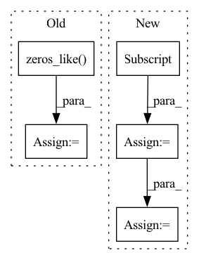

Pattern ID :22707
Before Change
end = torch.zeros_like(program)
end[-pad-1:] = 1
mask = torch.zeros_like( program)
if pad > 0:
mask[-pad:] = 1
// random sliceAfter Change
// compute delta time
time, idx = time.sort()
time = torch.cat((time.new_zeros((1,)), time)).diff(1)
program = program[idx]
pitch = pitch[idx]
velocity = velocity[idx]
// pad with start tokens, zeros
// always pad with batch_len so that end tokens don"t appear in a biased
// location
pad = self.batch_len-1//max(0, self.batch_len-len(pitch))
program = torch.cat((
program.new_full((1,), self.prog_start_token),
program,
program.new_zeros((pad,))))
pitch = torch.cat((
pitch.new_full((1,), self.start_token),
pitch,
pitch.new_zeros((pad,))))
time = torch.cat((
time.new_zeros((1,)),
time,
time.new_zeros((pad,))))
velocity = torch.cat((
velocity.new_zeros((1,)),
velocity,
velocity.new_zeros((pad,))))
// end signal: nonzero for last event
end = torch.zeros_like(program)
end[-pad-1:] = 1
// compute binary mask for the loss
mask = torch.ones_like(program, dtype=torch.bool)
if pad > 0:
mask[-pad:] = False
In pattern: SUPERPATTERN
Frequency: 4
Non-data size: 5
Instances Fragment ID: 72114814
Project Name: intelligent-instruments-lab/iil-python-tools
Commit Name: 78c2ab9e98adc304bebc8cff2541364d27d91dab
Time: 2022-04-15
Author: victor.shepardson@gmail.com
File Name: notepredictor/notepredictor/data.py
M Class Name: MIDIDataset
N Class Name: MIDIDataset
M Method Name: __getitem__(2)
N Method Name: __getitem__(2)
M Parent Class: Dataset
N Parent Class: Dataset
M File Name: notepredictor/notepredictor/data.py
N File Name: notepredictor/notepredictor/data.py
M Start Line: 33
M End Line: 104
N Start Line: 30
N End Line: 112
Before Change
dists = cdist(anchor, positive, metric=self.metric)
// add 10 to false negative
dist_keypts = np.eye(dist_keypts.shape[0]) * 10 + dist_keypts.detach().cpu().numpy()
add_matrix = torch.zeros_like( dists)
add_matrix[np.where(dist_keypts < self.safe_radius)] += 10
dists = dists + add_matrix
pos_mask = torch.eq(torch.unsqueeze(pids, dim=1), torch.unsqueeze(pids, dim=0))After Change
// pos = dists + 1e5 * (~pos_mask).float()
pos = furthest_positive[:, None]
pos_weight = (self.pos_optimal - pos).detach()
pos_weight = torch.max(torch.zeros_like(pos_weight), pos_weight)
lse_positive = torch.logsumexp(-self.log_scale * (pos - self.pos_margin) * pos_weight, dim=-1)
Fragment ID: 72114831
Project Name: xuyangbai/d3feat.pytorch
Commit Name: f19b93196387b22f1cb416f9a0214b2cffaf8e5e
Time: 2020-07-16
Author: 653823597@qq.com
File Name: utils/loss.py
M Class Name: CircleLoss
N Class Name: CircleLoss
M Method Name: forward(4)
N Method Name: forward(4)
M Parent Class: nn.Module
N Parent Class: nn.Module
M File Name: utils/loss.py
N File Name: utils/loss.py
M Start Line: 123
M End Line: 152
N Start Line: 125
N End Line: 157
Before Change
"""
ndim = pos.shape[1]
out = np.zeros_like( pos)
for icol in range(ndim):
pos_tmp = np.copy(pos)After Change
Returns : value of K * psi
"""
nwalk = pos.shape[0]
ndim = pos.shape[1]
out = np.zeros(nwalk)
for icol in range(ndim):
Fragment ID: 72114815
Project Name: nlesc-jcer/qmctorch
Commit Name: 7345ffa0f2c20189501088fdc9ac79ca7adebc42
Time: 2019-05-01
Author: nicolas.gm.renaud@gmail.com
File Name: pyCHAMP/wavefunction/wf_base.py
M Class Name: WF
N Class Name: WF
M Method Name: kinetic_fd(4)
N Method Name: kinetic_fd(4)
M Parent Class: object
N Parent Class: object
M File Name: pyCHAMP/wavefunction/wf_base.py
N File Name: pyCHAMP/wavefunction/wf_base.py
M Start Line: 97
M End Line: 119
N Start Line: 96
N End Line: 115
Before Change
self.emb = self.dropout(self.emb)
count = np.arange(x.shape[0]) + 1
self.c_t = torch.zeros_like( self.emb) // shape=(seq_len, batch_size, day_dim)
for i, att_timesteps in enumerate(count):
// 按时间步迭代，计算每个时间步的经attention的gru输出
self.c_t[i] = self.attentionStep(first_h_a, first_h_b, att_timesteps)After Change
out = torch.zeros((batch_size, time_steps, self.hidden_dim))
for cur_time in range(time_steps):
cur_x = x[:, : cur_time + 1, :]
out[:, cur_time, :] = self.retain_encoder(cur_x)
return out
Fragment ID: 72114822
Project Name: yhzhu99/covid-ehr-benchmarks
Commit Name: b3d4ba85ad8e8cfeb3e45e07e5fadfa3fd4a25fa
Time: 2022-06-25
Author: yhzhu99@gmail.com
File Name: app/models/backbones/retain.py
M Class Name: RETAIN
N Class Name: RETAIN
M Method Name: forward(2)
N Method Name: forward(2)
M Parent Class: nn.Module
N Parent Class: nn.Module
M File Name: app/models/backbones/retain.py
N File Name: app/models/backbones/retain.py
M Start Line: 64
M End Line: 83
N Start Line: 44
N End Line: 53